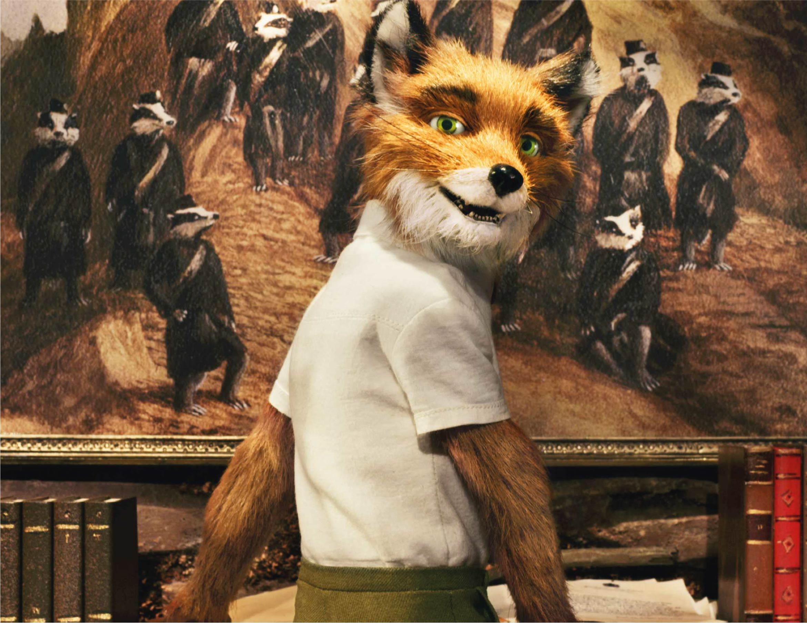
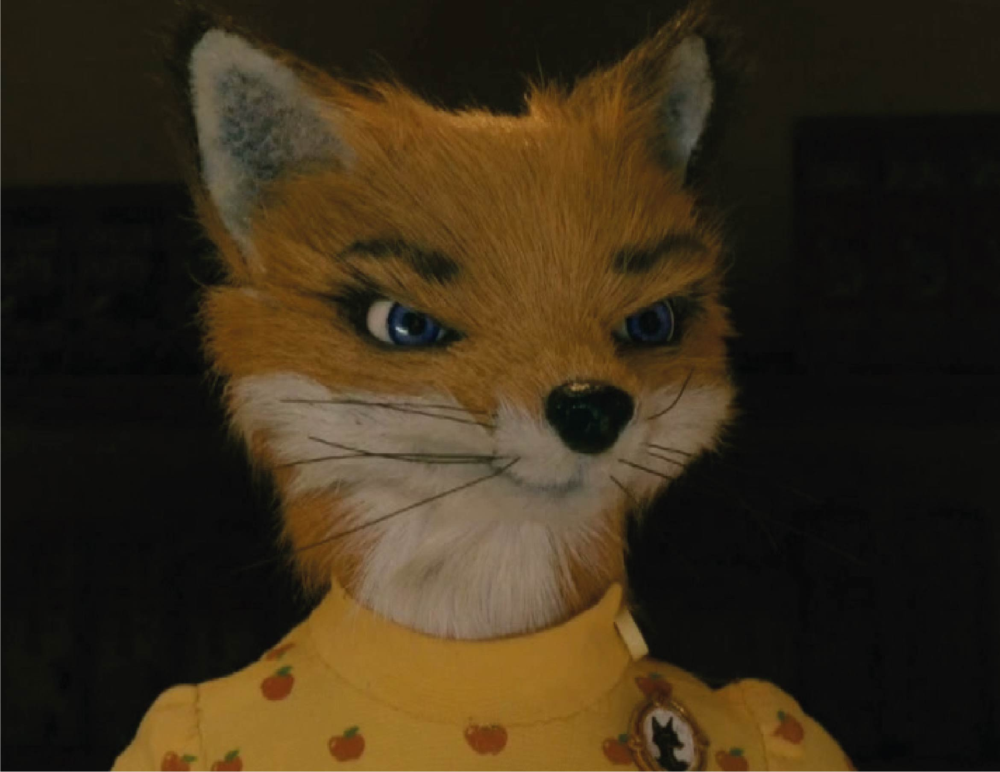
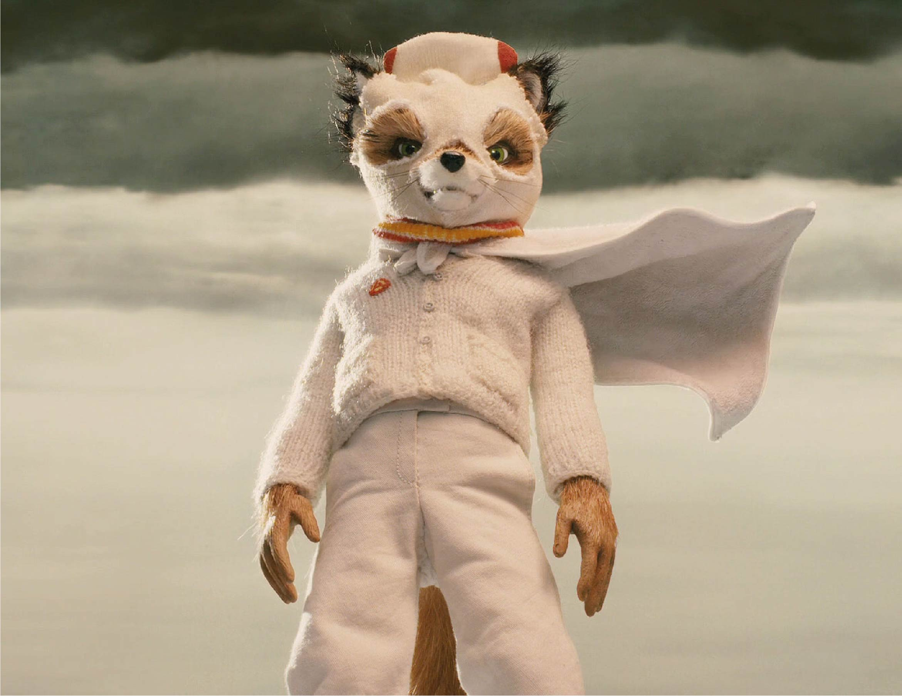
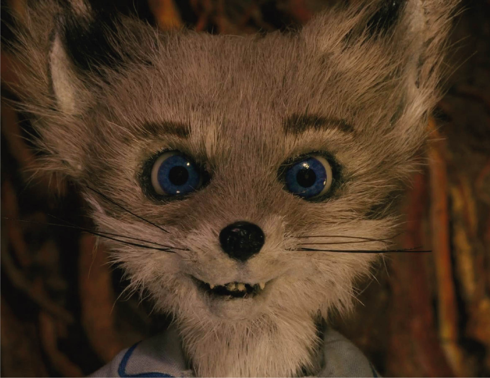
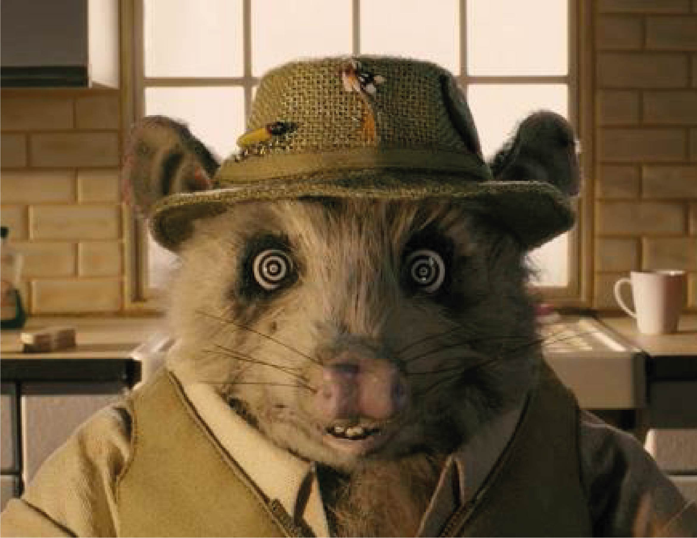
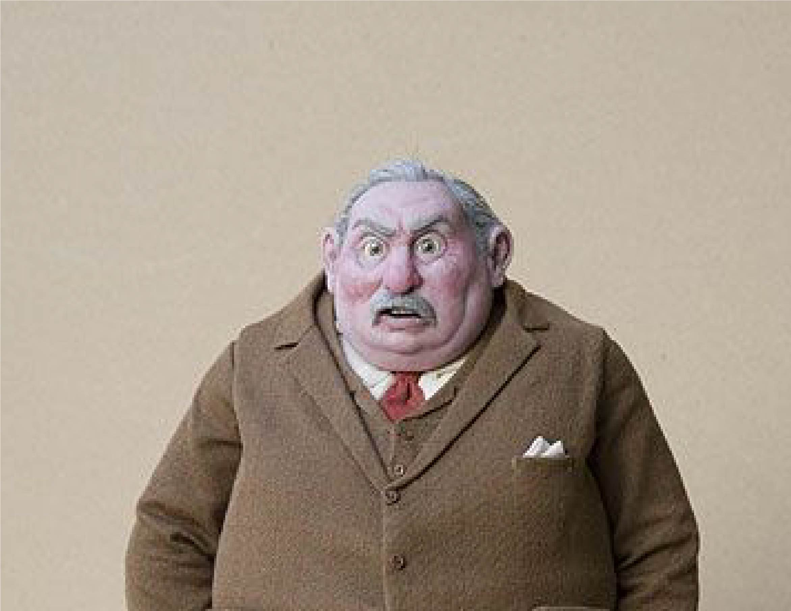
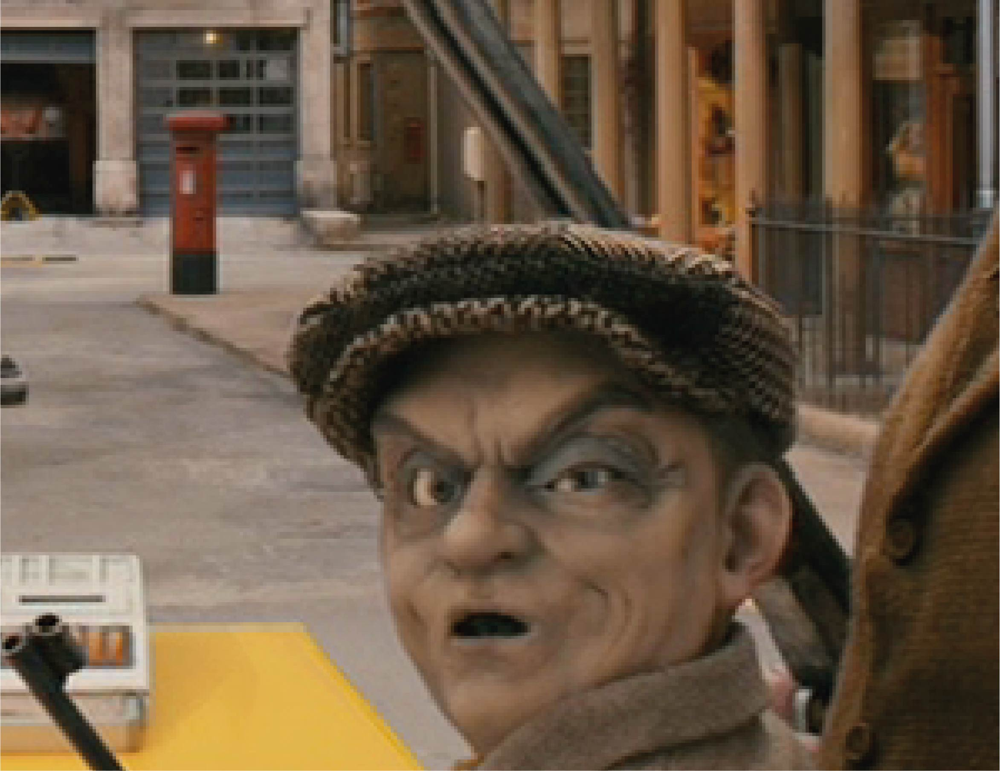

Sr. Fox
Protagonista
Vulpes Vulpes
Sr. Fox é o principal protagonista do livro de Roald Dahl e sua adaptação cinematográfica, Fantastic Mr. Fox. Sr. Fox é originalmente dublado por George Clooney e aqui é Armando Tiraboschi quem lhe dá voz.

Sra. Fox
Protagonista Secundária
Vulpes Vulpes
Sra. Fox é protagonista secundária do filme Fantastic Mr. Fox. É esposa do Sr. Fox e mãe de seu filho Ash. Ela age como a voz da razão e da consciência para os caminhos mais imprudentes de seu marido. Sra. Fox é originalmente dublada por Meryl Streep e aqui é Cristina Rodrigues quem lhe dá voz.

Ash Fox
Personagem Secundário
Vulpes Vulpes
Ashton Fox é um secundário do filme Fantastic Mr. Fox. É o único filho do Sr. e da Sra. Fox. No filme, Ash exibe uma personalidade excêntrica e luta para imitar seu pai, mas falha repetidamente. Ash é originalmente dublado por Jason Schwartzman e aqui é Fábio Lucindo quem lhe dá voz.

Kristofferson
Personagem Secundário
Vulpes Macrotis
Kristofferson é um personagem secundário no filme Fantastic Mr. Fox. É sobrinho do Sr. Fox e primo mais novo de seu filho Ash. Ele fica com seus tios pois seu pai tem pneumonia dupla. Kristofferson é originalmente dublado por Eric Anderson e aqui é Marco Campos quem lhe dá voz.

Kylie Opossum
Tritagonista
???
Kylie Opossum é tritagonista do filme Fantastic Mr. Fox. É melhor amigo e assistente pessoal do Sr. Fox. Trabalha como superintendente da casa na árvore de Sr. Fox e um pescador ao lado. Kylie é originalmente dublado por Wally Wolodarksky e aqui é Roberto Leite quem lhe dá voz.

Walter Boggis
Antagonista
Homo Sapiens
Walter Boggis é um dos principais antagonistas de Fantastic Mr. Fox. É o primeiro dos três fazendeiros a ser roubado pelo Sr. Fox. Após repetidos roubos os fazendeiros se aliam para matar Sr. Fox. Boggis é originalmente dublado por Robin Hurlstone e aqui é Antônio Moreno quem lhe dá voz.

Nathaniel Bunce
Antagonista
Homo Sapiens
Nathaniel Bunce é um dos principais antagonistas de Fantastic Mr. Fox. É o segundo dos três fazendeiros a ser roubado pelo Sr. Fox. Após repetidos roubos os fazendeiros se aliam para matar Sr. Fox. Bunce é originalmente dublado por Hugo Guinness e aqui é Carlos Silveira quem lhe dá voz.

Franklin Bean
Antagonista
Homo Sapiens
Franklin Bean é um dos principais antagonistas de Fantastic Mr. Fox. É o último dos três fazendeiros a ser roubado pelo Sr. Fox. Após repetidos roubos os fazendeiros se aliam para matar Sr. Fox. Bean é originalmente dublado por Michael Gambon e aqui é Luiz Carlos de Moraes quem lhe dá voz.